MCD-EEG: A Non-Stationary Spatio-Temporal EEG Benchmark for Cross-Task and Cross-Re-cap Brainprint Recognition and Algorithmic Fairness
Abstract
Electroencephalography (EEG)-based representation learning and brainprint recognition have emerged as important research directions for brain--computer interfaces and secure biometric authentication. However, existing public EEG datasets still suffer from several critical limitations, including the lack of non-stationary cognitive states and real-world distribution shifts, the neglect of substantial session variability caused by electrode removal and reattachment (re-cap), and the insufficient coverage of neurodiverse populations. To address these challenges, we introduce MCD-EEG, a large-scale EEG benchmark designed for cross-temporal robust and neurodiversity-aware representation learning. MCD-EEG contains recordings from 45 participants, including 22 prelingually deaf individuals and 23 hearing controls, collected using 60-channel high-density EEG together with behavioral measurements. A multi-stage cognitive paradigm consisting of reading, interference, and delayed recall tasks was employed, with repeated recordings acquired across sessions. Notably, the second session involved complete EEG cap removal and reattachment, explicitly introducing realistic cross-temporal session drift. Based on this dataset, we further establish standardized benchmark tasks for within-task, cross-task, and cross-re-cap brainprint recognition, providing a new testbed for developing robust and fair EEG representation learning algorithms.
Methodology
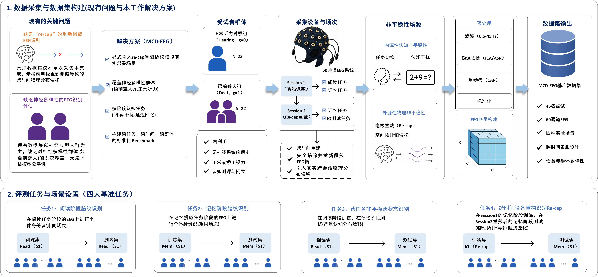
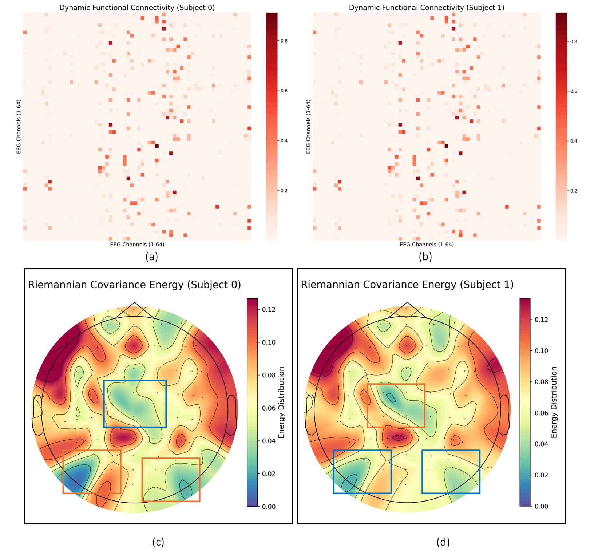
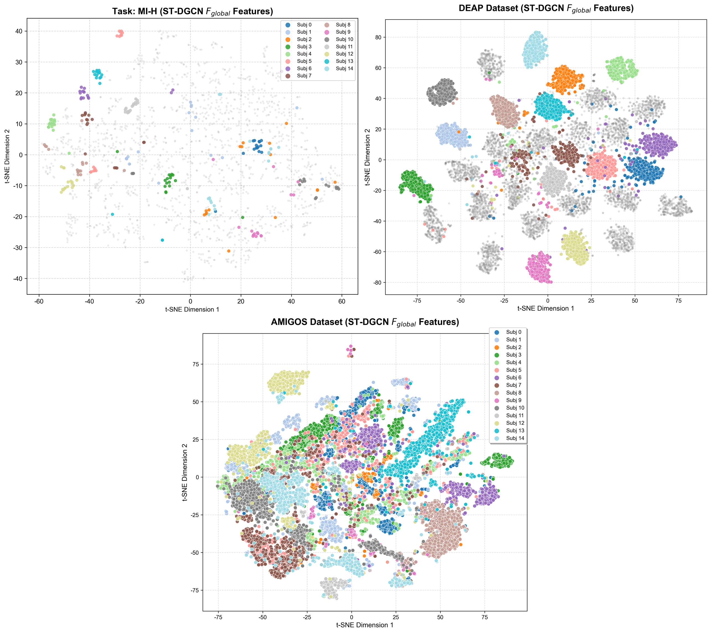
Experimental Results
This chapter systematically evaluates and analyzes the performance of current mainstream electroencephalography (EEG) deep learning architectures and traditional machine learning methods on the MCD-EEG benchmark suite.
Table 1 shows the performance of different models on the PhysioNet MI dataset under a large-scale 109-subject classification setting.
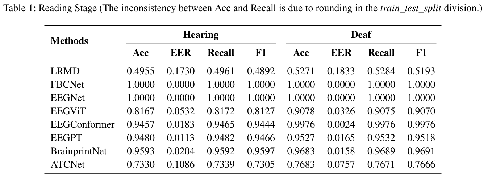
Table 2: Memory Stage (The inconsistency between Acc and Recall is due to rounding in the train_test_split division.)
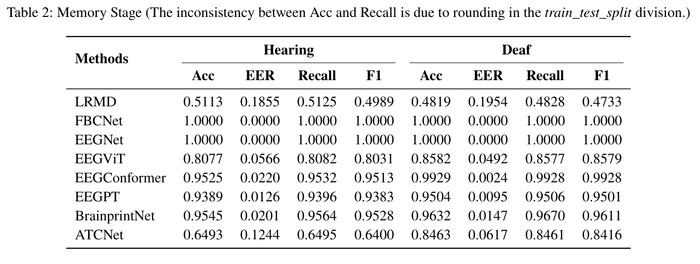
Table 3: Read-Memory Stage (Acc = Recall because the number of samples in each class is equal.)
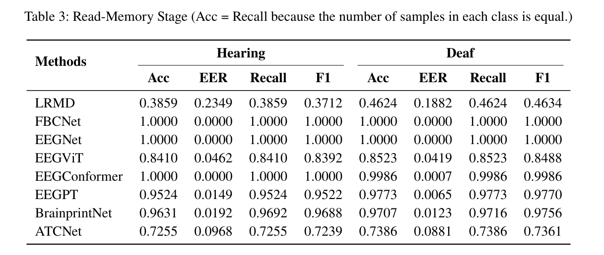
Table 4: Re-cap Stage (Acc = Recall because the number of samples in each class is equal.)
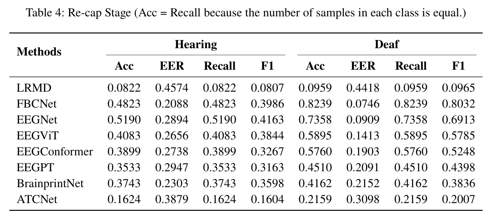
Figure 3: Evolution analysis of subgroup performance and fairness during distribution shifts.
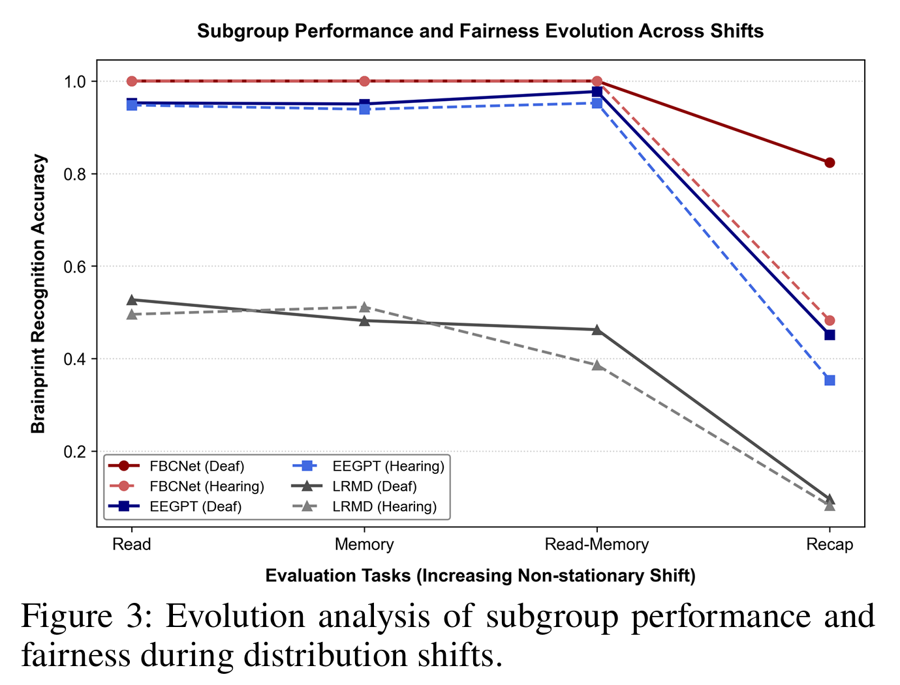
Dataset Overview
MCD-EEG is the first large-scale EEG benchmark specifically designed for evaluating robust brain representation learning under structured cognitive distribution shifts. Unlike existing public EEG datasets that primarily focus on single-session classification tasks, MCD-EEG introduces controlled cross-task and cross-session distribution shifts through a multi-stage cognitive paradigm involving reading, mathematical interference, and delayed memory retrieval. In addition, the dataset explicitly incorporates a complete EEG cap removal and reattachment (Re-cap) protocol to simulate realistic long-term acquisition variability, together with recordings from both deaf and hearing populations for fairness evaluation.
45
Participants
22 Deaf
23 Hearing
60
EEG Channels
High-density EEG
1000 Hz Sampling
5632
EEG Trials
128 Sentences
Multi-stage Paradigm
2
Recording Sessions
Read
Re-cap
Rich
Annotations
Identity
Population
Behavior
4
Benchmark Tasks
Closed-set
Cross-task
Cross-Re-cap
Fairness
Experimental Paradigm
MCD-EEG adopts a multi-stage cognitive paradigm consisting of sentence reading, arithmetic interference, and delayed memory retrieval. This design introduces structured cognitive distribution shifts while preserving subject identity, providing a realistic benchmark for evaluating robust EEG representation learning.
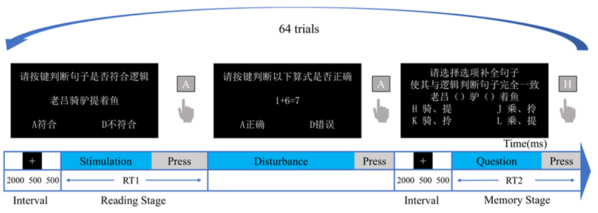
Benchmark Tasks
MCD-EEG establishes a unified benchmark suite covering multiple EEG representation learning tasks, ranging from conventional brainprint recognition to robustness evaluation under structured distribution shifts, algorithmic fairness assessment, and edge-oriented channel selection.
Brainprint Recognition
Closed-set identity recognition using single-session EEG recordings.
Cross-task Recognition
Evaluate robustness under cognitive state transitions from reading to delayed memory retrieval.
Cross-Re-cap
Assess long-term robustness after complete EEG cap removal and reattachment.
Algorithmic Fairness
Evaluate subgroup performance differences between deaf and hearing populations.
Channel Selection
Benchmark lightweight EEG systems using 4-, 8-, and 16-channel configurations.
Foundation Models
Evaluate general EEG representation learning and transferable neural embeddings.
Dataset Statistics
MCD-EEG provides comprehensive statistical analyses of participant demographics, EEG recordings, experimental paradigms, and benchmark distributions. These statistics highlight the diversity and scale of the benchmark while illustrating the structured distribution shifts introduced by the multi-stage cognitive protocol.
Cross-stageEEGdistributionanalysis.
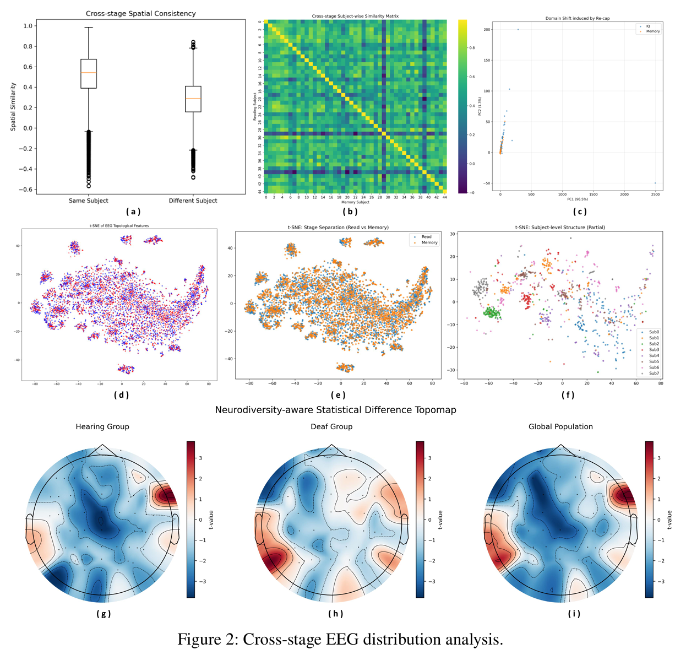
Results of the mixed-effects linear models
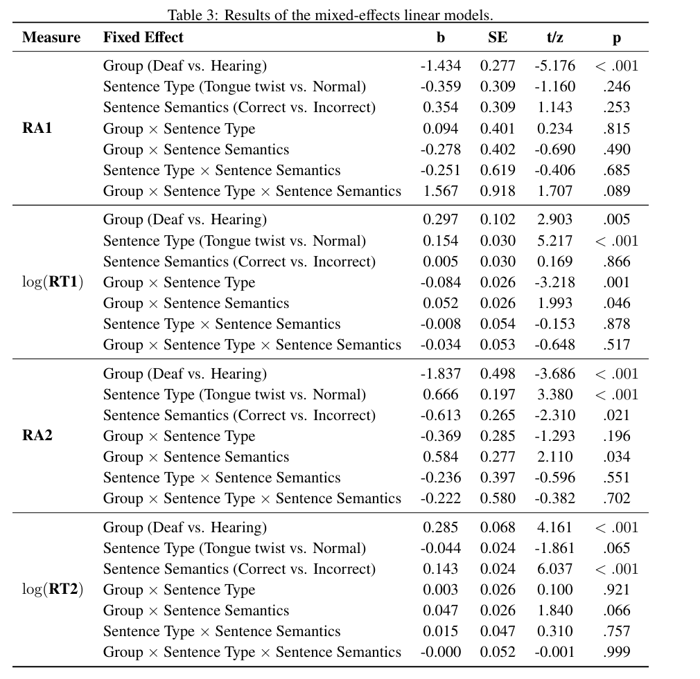
Participant Distribution
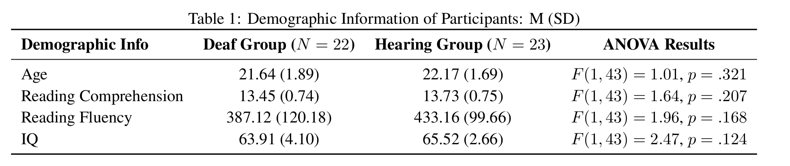
45
Participants
5632
EEG Trials
60
Channels
2
Sessions
4
Benchmark Tasks